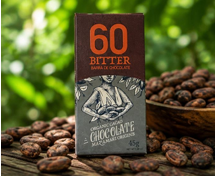
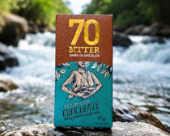
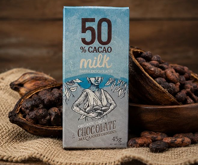
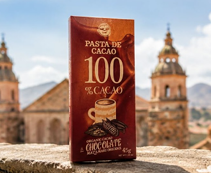
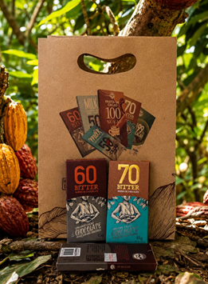
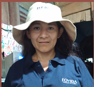

Origen transparente
Conoce de dónde viene cada tableta y a qué familia apoya tu compra.
Apoya a productores de cacao nativo y transforma tu compra en valor social.
Cada tableta cuenta la historia de una familia agricultora, protege la biodiversidad amazónica y lleva cacao premium desde la selva peruana hasta tu mesa.
Familias beneficiadas
Árboles sembrados
Agricultores apoyados
del precio va directamente al agricultor

Somos un puente entre la selva amazónica y tu mesa. Cada compra impulsa a familias agricultoras de Satipo, protege el bosque y promueve una producción sostenible.
Conoce de dónde viene cada tableta y a qué familia apoya tu compra.
Elaborado con cacao selecto, fermentado y tostado para sabor auténtico.
Pagamos precios justos a las comunidades agrícolas y apoyamos la sostenibilidad.
Solo cacao de Satipo recolectado a mano en fincas familiares.
Fruta madura, nuez tostada y una textura sedosa que persiste en el paladar.
Tu compra protege bosques, fortalece familias y promueve comercio justo.

Chocolate oscuro de alta pureza con cacao fino de aroma de la selva central del Perú. Notas intensas con acidez suave y retrogusto prolongado. Fermentación artesanal.
Equilibrio perfecto entre amargor y dulzor. Cacao seleccionado a mano en Mazamari, Satipo. Ideal para quienes inician su viaje en el chocolate artesanal.

Combinación perfecta de cacao nativo peruano con leche artesanal. Suave, cremoso y con el aroma único del cacao de Satipo. El favorito de las familias.

Cacao puro en su forma más auténtica. Ideal para recetas y para quienes buscan el sabor intenso y sin azúcar del mejor cacao peruano.

Selección de sabores para descubrir el mejor cacao peruano.
Cacao cultivado bajo sombra amazónica.
Fermentación y secado artesanal.
Transformación en chocolate premium.
Directo a tu hogar.
📍 Carretera Comunidad Nativa Shiriari, Mazamari, Satipo
Fundador de Consorcio G&R con 18 años de experiencia. Lidera la transformación del cacao desde el campo hasta el chocolate artesanal de exportación.

📍 Selva central del Perú - Consorcio G&R, Mazamari
Más de 10 años de experiencia; desde los 9 años aprendió junto a su padre el arte del cultivo. Hoy conduce 2 hectáreas de cacao y representa la voz del campo.

📍 Distrito de Mazamari, provincia de Satipo, Junín
Red de agricultores del distrito de Mazamari, capacitados en producción sostenible y fermentación artesanal de calidad.

📍 Comunidad Nativa Shiriari, Satipo
Las familias de la Comunidad Nativa Shiriari cultivan cacao de generación en generación con prácticas agroecológicas.
Tu compra fortalece comunidades y protege el bosque amazónico.
Soy chef y uso sus chocolates en mi restaurante. La calidad sensorial es extraordinaria: notas florales, textura sedosa. Pero lo que más me llega es saber exactamente quién lo produjo y cómo.
Chef Daniela RojasDescubrí esta marca en una feria de productos peruanos en Madrid. Quedé fascinado con el concepto y el sabor. Lo regalo a todos mis amigos gourmets como el mejor chocolate que han probado.
Martín ÁlvarezCada tableta tiene un perfil único y auténtico. Me encanta esa mezcla entre tradición amazónica y presentación moderna. Ideal para regalo y para disfrutar en familia.
Lucía FernándezEl empaquetado es precioso y el sabor supera las expectativas. Es el chocolate peruano que busco para proyectos especiales y catas con amigos.
Carlos GómezPrecio directo para las familias agricultoras.
Prácticas sostenibles respetando la selva.
Cada tableta ayuda a preservar el bosque amazónico.